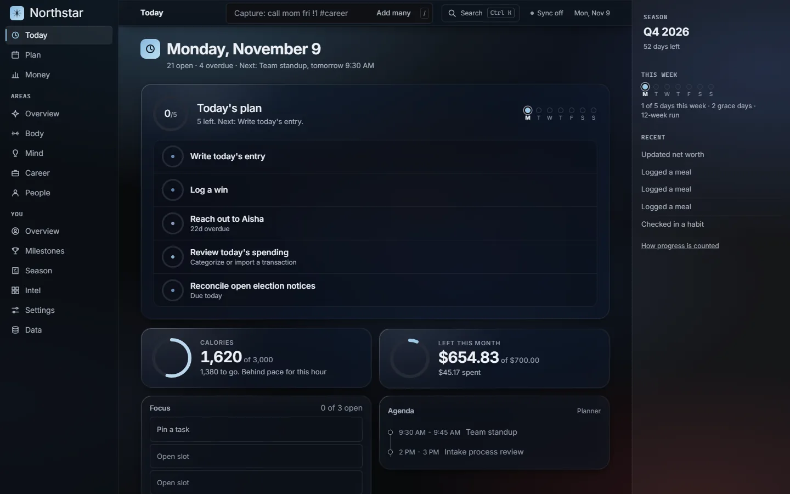

Hub 1 of 5
Today
Your day on one screen, and a mission board that finishes itself.
- Missions that complete themselves. Up to five a day, built from your goals and routines: a weigh-in, a protein target, a lift, a journal line, a win, the person you have not spoken to in longest. Each one is done when the underlying record appears, not when you tick it.
- Focus, agenda and one find. A three-slot focus bar, today’s agenda from the Planner, and a single factual line such as how many days this week you logged protein.
- Where the day stands. Due today, overdue, done and habits left, counted live from your records.
- Level, weekly streak and recent XP sit in a rail on desktop, each with a “Why do I earn XP?” link. Calm mode hides all of it.
